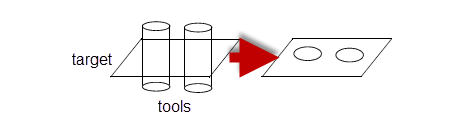
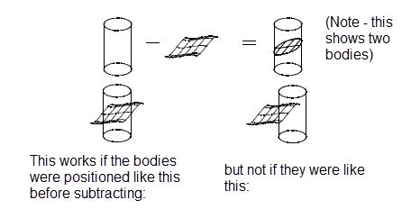
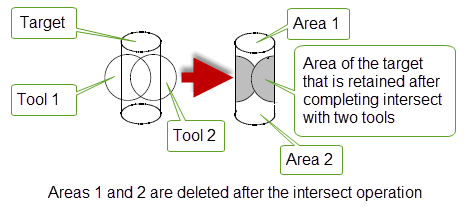
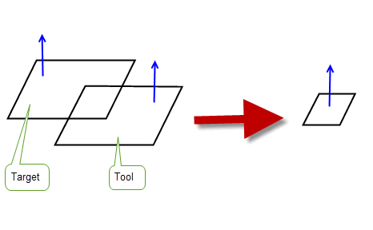
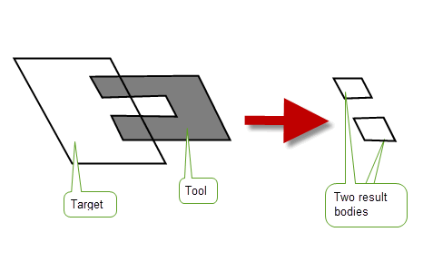
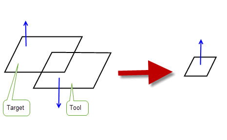
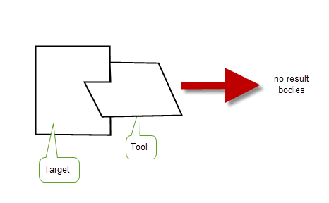
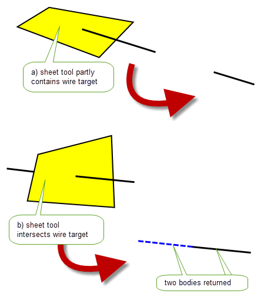

| |
Manifold Booleans |
| <<< Introduction to Booleans | Chapters | General Booleans >>> |
Chapter 52, “Introduction to Booleans” provided an overview on boolean operations and explained the different boolean options available in PK_BODY_boolean_2 and PK_FACE_boolean_2. This chapter gives more specific information on performing boolean operations with manifold topology.
A manifold boolean is a boolean operation that is undertaken when generalised topology is disabled in a session. This type of boolean must be carried out on manifold bodies and all result bodies will be manifold and connected solid or sheet bodies. Both global and local boolean operations may be attempted with manifold topology.
The manifold boolean operations behave as follows:
The behaviour of the subtraction operation can be altered for:
If the model is not exact and a tool that is considered to be exactly the correct size for the operation is used, coincident features can be missed. In subtract cases, this can mean the wrong amount of material is removed. In unite cases, this can mean that the tool is not actually coincident with the face on the target which you are trying to attach the tool to. Therefore, you should use oversize tools when possible for optimising the success of unite and subtract functions.
For information about performing booleans with general bodies, see Chapter 54, “General Booleans”.
When performing boolean operations on manifold booleans, it is strongly recommended that you do the following:
match_style
to PK_boolean_match_style_auto_c to improve auto matching of topologies.
selective_merge
when using
merge_imprinted
.
target_material_side
and
tool_material_side
instead of
fence
when performing fencing operations.This section describes some of the limitations of boolean operations when you are dealing exclusively with manifold bodies. When performing general booleans, as described in Chapter 54, “General Booleans”, these limitations do not apply.
If the target and the tool are the same body type (sheet or solid), you can use any of the three boolean operations. For targets and tools of different body types, the operations allowed are described below.
Booleans between sheet bodies cannot result in a sheet body with a ‘T’ or an ‘X’ shaped cross-section. This type of body is invalid and the boolean fails.
Most of the booleans illustrated below have a single tool, but you can supply a list of tool bodies:
Figure 53-1 Subtracting multiple solid bodies from a sheet
You can unite like with like, and you can also unite a solid with a sheet or a sheet with a solid by setting the
tool_material_side
,
target_material_side
, and
resulting_body_type
options appropriately: see Section 52.4.14, “Specifying the body type of tool and target” and Section 52.4.17, “Specifying the body type of the result” respectively. When you are uniting two sheet bodies, they must meet at their edges, unless they have overlapping faces.
You can subtract like from like, but you can also subtract solids from sheets, and sheets from solids, so long as the sheet cuts the solid completely. If it doesn’t, PK_ERROR_non_manifold is returned.
Figure 53-2 Subtracting a sheet body from a solid body
Figure 53-3 Subtracting a solid body from a sheet body
You can intersect solids with solids, as illustrated earlier.
When using more than one tool the resulting intersection is:
Figure 53-4 Intersecting a solid with more than one tool
You can intersect sheets with sheets, so long as the faces have coincident surfaces. The following rules apply when intersecting sheets with sheets:
Figure 53-5 Intersecting sheet bodies that touch but do not overlap
Figure 53-6 Intersecting sheet bodies that have a single overlap
Figure 53-7 Intersecting sheet bodies that have multiple overlaps
Figure 53-8 Intersecting sheet bodies that have opposite face normals
If the faces have crossing surfaces then there is no intersection:
Figure 53-9 Intersecting sheet bodies that cross
You can intersect a sheet with a solid, and you can intersect a solid with a sheet by setting the
tool_material_side
,
target_material_side
, and
resulting_body_type
options appropriately: see Section 52.4.14, “Specifying the body type of tool and target” and Section 52.4.17, “Specifying the body type of the result” respectively.
Figure 53-10 Intersecting a sheet body with a solid body
Figure 53-11 Results of merge options during boolean operations on manifold topology
We strongly recommend that
selective_merge
and
merge_imprinted
are both switched on when performing manifold boolean operations.
Warning: The
selective_merge
and
merge_imprinted
options should not be used in general booleans. For information about merging topology during general boolean operations, see Section 54.3, “Merging redundant topology”. |
Many different combinations of targets, tools, and boolean operations are possible when generalised topology is disabled, based on the configuration of the target and tool. In addition, you can use
target_material_side
and
tool_material_side
to temporarily change the body type of either the target or tool during the boolean operation, and
resulting_body_type
to choose the type of the resulting body you would like, in order to increase the range of booleans that can be performed.
This section summarises what can be attempted, and what should be avoided.
If
resulting_body_type
is left at its default value, then any combination of boolean operation, sheet or solid target, and sheet or solid tool is possible, except for the following:
|
To unite a sheet target and a solid tool successfully, set |
|||
|
To intersect a solid target with a sheet tool, set |
In particular, subtract operations are possible using any combination of tool and target, with no additional option setting required.
|
Note: In many cases, uniting a solid target with a sheet tool leads to failure. In order for this combination to be successful, the sheet tool must enclose a solid region, as described in Section 52.4.11, “Enclosing solid regions with a sheet body”. |
If
resulting_body_type
(see Section 52.4.17, “Specifying the body type of the result”) is set to a non-default value, then any boolean combination is possible. By setting
resulting_body_type
appropriately, you can use any type of target and tool, combine them using any boolean operation, and use any value of
target_material_side
and
tool_material_side
.
The following functions provide specialised boolean functionality in Parasolid:
Although most of the functionality offered by these functions is also provided by the other boolean functions described in this chapter, some of these functions also let you perform boolean operations with wire target bodies. Wire tool bodies are not supported, however.
Each function receives a target body and an array of tool bodies, as detailed below.
The bodies returned by each function replace the original target. Tool bodies are always deleted after the operation, unless the target is a wire and generalised topology is disabled in the session. In this case, the tools are not modified.
In the case of PK_BODY_subtract_bodies, if a wire target is partly contained by a sheet tool, it loses that part of the target that is contained. However, if a sheet tool intersects a wire target, the target is split at the point of intersection, and both bodies are returned. This is illustrated in Figure 53-12. Note that the tools would not be modified in either of these examples, though this is not shown for simplicity.
Figure 53-12 Subtracting sheet tools from wire bodies
|
Note: Turning generalised topology on has no effect on these functions in cases where the target is a wire body. |
| <<< Introduction to Booleans | Chapters | General Booleans >>> |